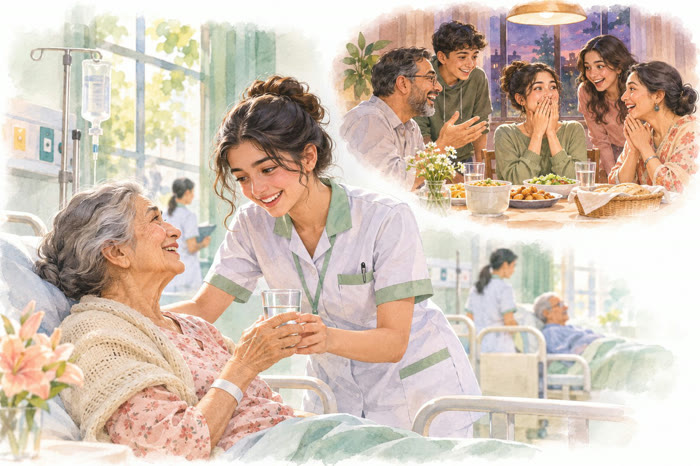

Listen to the text
Speed:

My sister Nadiia finished school last June with excellent marks. Everybody was sure that she would go straight to university. Our parents had already chosen the faculty. Then, at a family dinner, Nadiia put down her fork and said, "I intend to take a gap year." Nobody spoke for a long time. A gap year is a year between school and university. Young people in many countries use it to work, to travel or to try out different jobs before they choose a profession. In our family nobody had ever heard of such a thing. "A year of doing nothing?" asked Dad. "You will forget everything you have learnt." "Not nothing," said Nadiia. "I have a plan. For six months I am going to work in a hospital as a nurse's assistant. Then I will spend three months at a language school and three months as a volunteer at a camp for children." "But why?" asked Mum. "Because I am not sure that I want to be a doctor. Six years of studying is a long time. I want to prove to myself that I can treat sick people before I start." Our parents had many arguments. A university degree gives you qualifications and a well-paid job. A gap year is risky: there is no guarantee that you will come back to your books. Some young people get used to earning money and never enter university at all. Nadiia listened to everything. "You are right, it is risky," she said. "But choosing the wrong profession at seventeen is risky too." In the end they made a deal. Nadiia could take her year off if she paid for her own language course and passed her exams again in spring. That was eight months ago. My sister gets up at five and comes home with tired feet. She has learnt to make beds, to measure temperature and to calm frightened children. She has seen things that are not shown in films about doctors. Last week I asked her, "So? Do you still want to study medicine?" She smiled. "More than ever. But now I know why. Before, it was a nice idea. Now it is my decision." Next year it will be my turn to finish school. I haven't decided anything yet. But I have learnt one thing from my sister: a year off is lost only if you have no plan.
Tap any sentence to hear it again.
Сподобалось? На сайті ще більше матеріалів для вчителів!
Reader, презентації, ігри, діагностичні та контрольні роботи до підручників 1-11 класів.
Перейти на сайт materials.allaenglish.com